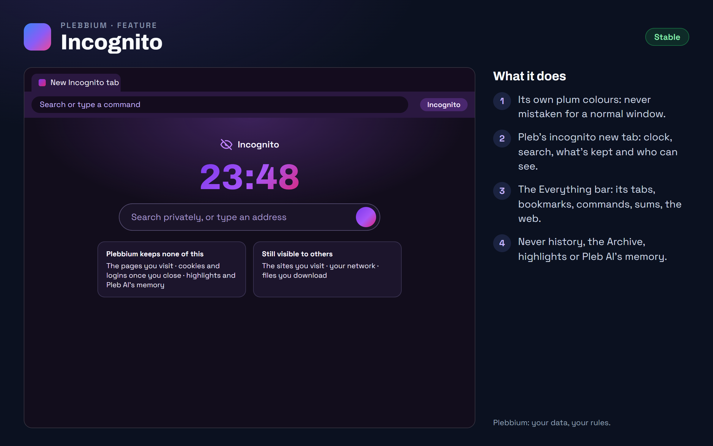

All features › Shipped › Incognito
Incognito
Stablesince 3620An incognito window in Plebbium's own plum colours, with Pleb's own new tab: a clock, a search box and, plainly, what Plebbium keeps none of and who can still see you. The Everything bar works there too, without anything from your normal browsing.

How to use it
- Open one: Ctrl+Shift+N, the Pleb menu's New incognito window, or "incognito" in the Everything bar.
- Search: type in its new tab's box or the address bar.
- The Everything bar: Ctrl+Shift+A, as in any window.
- Forget it all: close every incognito window.
When it arrived
156.0.8078.3618Beta 7 Nov 2026 · Stable 13 Nov 2026 (3620)
Incognito in Plebbium's own look, with the Everything bar.
Why it works this way
Never mistaken for a normal window
Plum, not Plebbium's violet or red, so you always know which window you are in.
Nothing from your normal browsing
In an incognito window the Everything bar leaves out your history, the Archive, highlights, workspaces and Pleb AI, and remembers nothing you pick there. A normal window's bar never lists incognito tabs.
Plain about what it can't hide
Incognito keeps nothing on your PC; the sites you visit and your network can still see you, and the new tab says so.